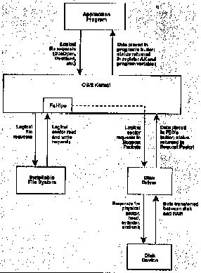

Installable File Systems
Support for installable file systems has been one of the most eagerly
anticipated features of OS/2 Version 1.2. it will make it possible to
access multiple incompatible volume structures--FAT, HPFS, CD ROM, and
perhaps even UNIX on the same OS/2 system at the same time, will
simplify the life of network implementors, and will open the door to
rapid file system evolution and innovation. Installable file systems
are, however, only relevant to the HPFS insofar as they make use of
the HPFS optional. The FAT file system is still embedded in the OS/2
kernel, as it was in OS/2 1.0 and 1.1, and will remain there as the
compatibility file system for some time to come. An installable file
system driver (FSD) is analogous in many ways to a device driver. An
FSD resides on the disk in a file that is structured like a
dynamic-link library (DLL), typically with a SYS or IFS extension,
and is loaded during system initialization by IFS= statements
in the CONFIG.SYS file. IFS= directives are processed
in the order they are encountered and are also sensitive to the order of
DEVlCE= statements for device drivers. This lets you load a
device driver for a nonstandard device, load a file system driver from
a volume on that device, and so on. Once an FSD is installed and
initialized, the kernel communicates with it in terms of logical requests
for file opens, reads, writes, seeks, closes, and so on.
The FSD translates these requests--using control structures and tables
found on the volume itself--into requests for sector reads and writes for
which it can call special kernel entry points called File System Helpers
(FsHlps). The kernel passes the demands for sector I/O to the appropriate
device driver and returns the results to the FSD
(Figure 6).
The procedure used by the operating system to associate volumes with
FSDs is called dynamic mounting and works as follows. Whenever a volume
is first accessed, or after it has been locked for direct access and then
unlocked (for example, by a FORMAT operation), OS/2 presents identifying
information from the volume to each of the FSDs in turn until one of them
recognizes the information. When an FSD claims the volume, the volume is
mounted and all subsequent file I/O requests for the volume are routed to
that FSD.

FIGURE 6:
A simplified sketch of the relationship between an application program, the
OS/2 kernel, an installable file system, a disk drlver, and the physical
disk device. The applicatIon issues logical file requests to the OS/2 kernel
by callng the entry points for DosOpen, DosRead, DosWrlte, DosChgFilePtr, and
so on. The kernel passes these requests to the appropriate installable file
system for the volume holding the file. The installable file system translates
the logical file requests into requests for reads or writes of logical sectors
and calls a kernel File System Helper (FsHlp) to pass these requests to the
appropriate disk drlver. The disk driver transforms the logical sector requests
into requests for specific physical units, cylinders heads, and sectors, and
issues commands to the disk adapter to transfer data between the disk and
memory.
< [Extended Attributes] |
[HPFS Home] |
[Performance Issues] >
Html'ed by Hartmut Frommert